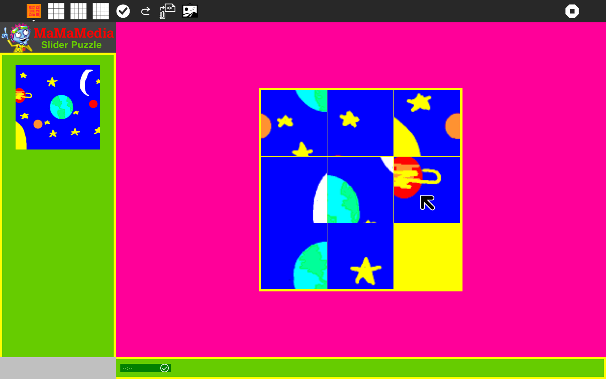

Slider¶
Overview¶
The slider puzzle is a classic logic game that challenges a player to slide tiles on a board to form a picture or pattern. You may not lift any tile off the board; you can only slide a tile up, down, right or left. You must use strategy and logic to find a sequence of moves that will allow you to unscramble the tiles and solve the puzzle.
This digital Slider Puzzle provides a fun context for young learners (and beginning Sugar users) to explore basic functions of the Sugar on your Laptop, learn individual and collaborative problem-solving skills, and developcreative projects that reflect an understanding of curriculum they are studying.
Throughout the school year, the Slider Puzzle activity can be integrated into different subject areas (i.e. geography, math, creative writing). Students can make puzzle images relating to a subject the class is studying, and share them with peers. In the process they will also learn how to use and integrate the output from activiites like Paint and Record, and how to collaborate over the Mesh.

Skills:
Practice using logic and strategic thinking to solve a problem.
Practice visual comparison and problem solving skills.
Practice discussing thought processes around problem solving.
Learn to explain ideas, thought processes and strategies to peers.
Learn from classmates.
Learn how to use specific programs of the your Laptop.
Learn how to use the Paint activity with a game.
Learn to work together on a project.
Learn to express ideas you are studying through an original project.
Exploring the Slider Puzzle Activity¶
From the Home screen of your Sugar, click on the Slider Puzzle icon.
Click on the ‘select picture’ button on the top and explore the puzzle image list on the pop up panel, then click to choose one image to solve.
Explore how the puzzle works. Click on a tile with the mouse to move it into the vacant square. Note that you can move the tiles up, down, right and left, but you cannot lift them off the board.
Change the number of squares from 9 to 12 to 16. Observe how the game becomes more challenging when you select more squares.
Click on “Shuffle” to mix the tiles up in a new way. Click on Solve to see the picture in its complete state.
Work in pairs or independently to solve a 9-tile puzzle. If you solve your puzzle quickly, try solving one with 12 or 16 tiles. Walk around and help other students who are still solving their puzzles.
After playing with the puzzle for a while, write down some of your problem-solving strategies or questions.
Discuss each person’s strategies and questions as a group. Identify what strategies worked and what didn’t work. Discuss the things you found difficult or frustrating.
Create charts with shared experiences, differences and similarities. One student can record all the students’ ideas on the Laptop.
Puzzle-Solving Contest¶
Working in teams of 2-3 people, try to solve a 9-tile Slider Puzzle in the fastest time. Each team must select the same image, and click on it at the same time (Count: “3, 2, 1, GO!”). The timer indicates who finishes first.
The winning team should share their strategies with the class. Each team member should say one thing about how they solved the puzzle quickly and worked together.
Other students should describe their strategies too. Encourage everyone to name one way their puzzle solving skills have improved since the first time they played.
Repeat the contest with a 12 and 16 tile puzzle. Allow the winner of the preceding round to choose the puzzle image. Does the strategy change when there are more puzzle tiles to move? How?
Select Import picture from journal (Conveying original ideas)¶
From the Home screen of your Sugar, click on the “Paint” program.
Explore how the Paint activity works. Play and experiment with all the fun features (brushes, bucket, spray, different colors, etc.)
Create a picture that you would like to turn into a Slider puzzle. Save it as “sliderpuzzle1” and close Paint.
Open the Slider Puzzle and click on the “Import picture from journal” button on the top to find your “sliderpuzzle1” image. A window will open that shows the contents in your Journal – look for “sliderpuzzle1” and click on it. The Journal window will close and your image will appear in the Slider Puzzle.
Play with your puzzle. Could you solve it? What made it hard or easy to solve? Switch laptops with a friend and try to solve one of their original puzzle images.
Share your experiences as a group: What makes an image easy or difficult to solve as a puzzle? Which strategies were helpful? One student should record this conversation on their Laptop using the “Write” program.
Now try creating a puzzle picture using the Record activity. Take a photo and save it as “sliderpuzzle2” and close Record. Go back to Slider Puzzle and open the new image from “Import picture from journal” button as before, then play with it.
“Animals” (Independent Study Project example)¶
Pick a theme or subject you want to study, such as Animals. (Some other ideas might be: family, historical figures, planets, health, nutrition, home, country, or maps.)
Use “Paint” to draw a picture of a favorite animal or use “Record” to take a picture of an animal you see everyday.
Put your animal image in the Slider Puzzle.
Use the “Write”activity on your Sugar to make a list of questions about the animal such as: What does it eat? Where does it live? How does it make babies?
Try to answer the questions you wrote down about the animal. Use the Internet and books. Ask other students and grown ups what they know about the animal.
Present your picture and some facts you learned about the animal to your class. Explain why you chose this animal and how you got information about it. Talk about how you created the image with Paint or Record.
Discuss any challenges you had in researching your animal.
Have a class volunteer write down a list of these challenges on the Sugar or the classroom wall, adding to it after each student talks about their animal.
Think together about different ways to find answers to the questions.
Try solving each other’s Animal Slider Puzzles.
“Our Flag” (Group learning project example)¶
Skills:
Learn about your country’s flag, what it represents, and how it fits into your country’s history.
Understand what symbols are and the function they serve.
Learn how to brainstorm.
Practice discussing thoughts and ideas.
Find answers through discussion and research.
Activity:
Examine the flag of your country. What does it mean to you? How does it make you feel? Discuss why a country has a flag. Record your ideas on your Sugar and if possible, post somewhere in the classroom.
Make a list of the symbols, pictures, colors and/or writing on your country’s flag. Discuss what the symbols stand for (for example, the 50 stars on the American Flag represent the 50 states that are in the United States). Add these ideas on your Sugar too.
In small groups, brainstorm (think together) about what these symbols mean. Why did the creators of the flag choose these symbols? What are some other symbols of your country? If you were designing the flag today, would symbols would you put on it?
As a class, share what each group discussed. Explain the history of your native country’s flag and what the symbols actually mean. Share your ideas about other symbols of your country.
Create a picture of your country’s flag using “Paint” and save it.
Open your Flag image in the Slider Puzzle.
Solve the FLAG Slider Puzzles that have been created.
Create Your Own Flag¶
Skills:
Understand the purpose of a flag.
Reflect and think about individual characteristics.
Come up with symbols to represent these characteristics.
Practice presenting individual ideas to others.
Create an image using skills previously learned on the computer.
Build a newly created image on the Slider Puzzle.
Activity:
Using the “Paint” activity, design your own flag that symbolizes YOU. Place objects, symbols, colors and designs that are meaningful and representative of YOU. If you have difficulty coming up with ideas, talk to other students, they might help to spark ideas in your imagination.
Share your own personal flag with the class and explain the symbols you included on it. (For example, one girl’s flag might have many hearts because she has a lot of love for the people around her; another boy might have pictures of books because he love to read).
Put your newly created flag into the Slider Puzzle.
Walk around and solve each other’s puzzles.
The n-puzzle (Mathematical Patterns and Sequences)¶
The n-puzzle is general name for a slider puzzle that consists of a grid of numbered squares with one square missing, and the numbers out of sequence. The 9-puzzle is a 3×3 numbered grid, the 16 puzzle is a 4×4 numbered grid. The goal of the n-puzzle is put the scrambled numbers back in sequence.
The n-puzzle is a classical problem for modeling repeatable steps (or “algorithms”) involving mathematical patterns (or “heuristics.”) For example, you can begin by counting the number of misplaced tiles as you formulate a strategy for solving the puzzle. The n-puzzle also helps students to understand that some tile arrangements are unsolvable.
Skills:
Recognize patterns.
Practice classification and grouping.
Practice sequencing.
Put numbers in order.
Activity:
Start the Slider Puzzle activity click on the ‘select picture’ Button on the top and choose an image with numbers. Sequencing is when you put things into a logical order.
When the image comes up, think how this image is set up differently from the one on the Slider Puzzle. The Slider Puzzle creates a large image, where all the squares are pieces of the larger image, while the Sequencing image contains a number on each tile.
Try to solve the 9-tile puzzle first. Try to put the numbers in order from smallest to largest. Model for other students how to slide the keys and place them in order.
Once you are able to solve the 9-puzzle, share your strategies with the class. How is this different from the Slider Puzzles where you are assembling a picture?
Now try to solve the 16-puzzle. How is this harder or easier?
After completing the 16-puzzle, walk around and help those who are having trouble.